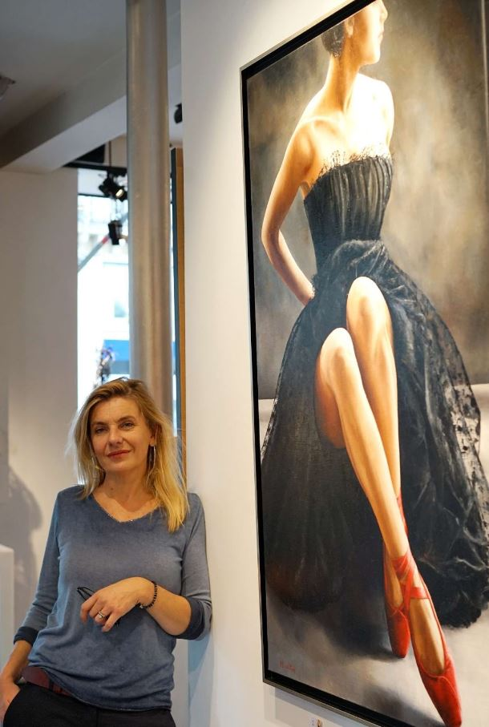

01Mai / Juin 2019
Artistes
« Réussir à sublimer la féminité »
Dossier « Savoir-faire » consacré à la peinture d’Annick Bouvattier.

Annick Bouvattier est née à Nevers. Son père, pédiatre et amateur d’art, lui transmet dès sa prime enfance le goût de l’art et de la peinture.
Baccalauréat scientifique en poche, elle délaisse la tradition familiale des études de médecine pour s’inscrire à l’école de mode “Bercot – Marie Rucki” où, pendant deux ans, elle reçoit une formation de styliste. Ses créations, présentées à Paris et à la Villa Médicis à Rome, connaissent un succès d’estime auprès des professionnels et font l’objet de parutions dans la presse spécialisée.
Cependant, plus attirée par la mode spectacle que par celle des boutiques, elle s’oriente très vite vers le cinéma et la publicité. Costumière styliste, elle travaille souvent dans les studios de Cinecittà à Rome. De ses séjours italiens, elle gardera le goût des couleurs chaudes, sensuelles, profondes : ocres ensoleillés, rouges sourds, bleus intenses, verts profonds.
Au milieu des années 1990, sur les conseils de son mari et grâce à son soutien, elle décide de se consacrer exclusivement à la peinture à l’huile. Après deux années de recherche autodidacte, elle devient pendant 4 ans l’élève de Pierre Ramel, disciple et massier de Édouard Mac-Avoy et vice-président du Salon d’Automne. Il lui enseignera la technique de la peinture à l’huile au couteau qu’elle travaille lissée, sans épaisseur de matière, tout en transparence.
Annick Bouvattier peint essentiellement des femmes, dans des jeux d’ombres et de lumière. Elles vivent leur féminité sans fausse pudeur, indifférentes aux regards extérieurs.
Annick Bouvattier was born in Nevers, France. Her father, a pediatrician and art lover, passed on to her from early childhood a love of art and painting.
With a science baccalaureate in hand, she broke with the family tradition of studying medicine and enrolled at the “Bercot – Marie Rucki” fashion school, where she spent two years training as a fashion designer. Her creations, shown in Paris and at the Villa Medici in Rome, were well received by professionals and featured in the specialist press.
Yet, more drawn to fashion for the stage and screen than to boutique fashion, she soon turned to film and advertising. As a costume designer, she often worked at the Cinecittà studios in Rome. From her years in Italy she kept a taste for warm, sensual, deep colors: sunlit ochres, muted reds, intense blues, deep greens.
In the mid-1990s, on her husband’s advice and with his support, she decided to devote herself entirely to oil painting. After two years of self-taught exploration, she spent four years as a pupil of Pierre Ramel, disciple and massier (head student) of Édouard Mac-Avoy and vice-president of the Salon d’Automne. He taught her the technique of palette-knife oil painting, which she works smooth, without impasto, in transparent layers.
Annick Bouvattier mainly paints women, in plays of light and shadow. They live their femininity without false modesty, indifferent to the gaze of others.
01Mai / Juin 2019
« Réussir à sublimer la féminité »
Dossier « Savoir-faire » consacré à la peinture d’Annick Bouvattier.
Contact presse — entretien, visuels en haute définition, expositionÉcrire →
Les œuvres disponibles sont signalées « Disponible » dans le portfolio. Ouvrez la fiche d'une œuvre puis « Demander des informations » : le formulaire de contact s'ouvre avec son titre déjà indiqué.
Certaines œuvres sont également présentées dans les galeries partenaires et sur Saatchi Art.
Plusieurs galeries présentent le travail d'Annick Bouvattier, en France et aux États-Unis : leurs adresses et itinéraires sont sur la page Galeries. Les expositions passées sont retracées sur la page Expositions.
Le portfolio rassemble plusieurs œuvres réalisées sur commande (collection « Commandes »). Pour un projet, décrivez-le — sujet, format souhaité, délai — via le formulaire de contact.
La peinture à l'huile au couteau, apprise auprès de Pierre Ramel. Elle la travaille lissée, sans épaisseur de matière, tout en transparence.
Les parutions sont réunies plus haut, dans la partie Presse. Pour une interview, une exposition ou une demande de visuels, écrivez via le formulaire de contact.
Available works are marked “Available” in the portfolio. Open a work, then “Request information”: the contact form opens with its title already filled in.
Some works are also shown in partner galleries and on Saatchi Art.
Several galleries show Annick Bouvattier's work, in France and the United States: addresses and directions are on the Galleries page. Past exhibitions are traced on the Exhibitions page.
The portfolio includes several commissioned works (“Commissions” collection). To discuss a project, describe it — subject, preferred size, timing — through the contact form.
Palette-knife oil painting, learned from Pierre Ramel. She works it smooth, without impasto, in transparent layers.
Publications are gathered above, in the Press section. For an interview, an exhibition or image requests, write through the contact form.
L'aperçu n'est pas disponible sur cet appareil.
Ouvrir le PDF